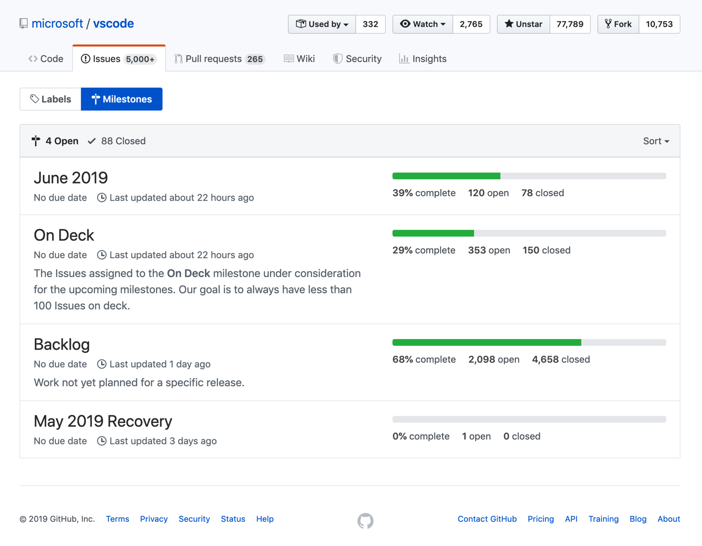
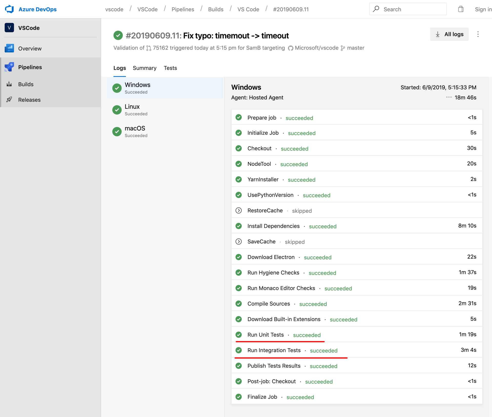
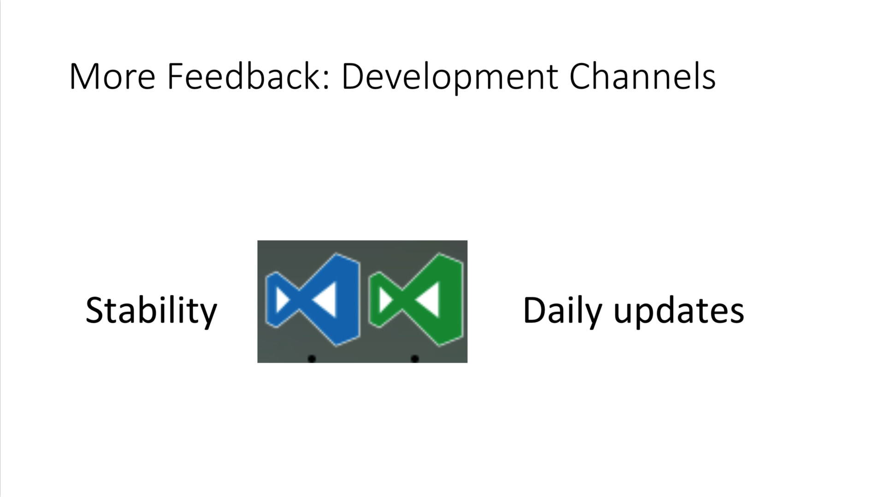

- 00 开篇词 你为什么应该学好软件工程？.md.html
- 01 到底应该怎样理解软件工程？.md.html
- 02 工程思维：把每件事都当作一个项目来推进.md.html
- 03 瀑布模型：像工厂流水线一样把软件开发分层化.md.html
- 04 瀑布模型之外，还有哪些开发模型？.md.html
- 05 敏捷开发到底是想解决什么问题？.md.html
- 06 大厂都在用哪些敏捷方法？（上）.md.html
- 07 大厂都在用哪些敏捷方法？（下）.md.html
- 08 怎样平衡软件质量与时间成本范围的关系？.md.html
- 09 为什么软件工程项目普遍不重视可行性分析？.md.html
- 10 如果你想技术转管理，先来试试管好一个项目.md.html
- 11 项目计划：代码未动，计划先行.md.html
- 12 流程和规范：红绿灯不是约束，而是用来提高效率.md.html
- 13 白天开会，加班写代码的节奏怎么破？.md.html
- 14 项目管理工具：一切管理问题，都应思考能否通过工具解决.md.html
- 15 风险管理：不能盲目乐观，凡事都应该有B计划.md.html
- 16 怎样才能写好项目文档？.md.html
- 17 需求分析到底要分析什么？怎么分析？.md.html
- 18 原型设计：如何用最小的代价完成产品特性？.md.html
- 19 作为程序员，你应该有产品意识.md.html
- 20 如何应对让人头疼的需求变更问题？.md.html
- 21 架构设计：普通程序员也能实现复杂系统？.md.html
- 22 如何为项目做好技术选型？.md.html
- 23 架构师：不想当架构师的程序员不是好程序员.md.html
- 24 技术债务：是继续修修补补凑合着用，还是推翻重来？.md.html
- 25 有哪些方法可以提高开发效率？.md.html
- 26 持续交付：如何做到随时发布新版本到生产环境？.md.html
- 27 软件工程师的核心竞争力是什么？（上）.md.html
- 28 软件工程师的核心竞争力是什么？（下）.md.html
- 29 自动化测试：如何把Bug杀死在摇篮里？.md.html
- 30 用好源代码管理工具，让你的协作更高效.md.html
- 31 软件测试要为产品质量负责吗？.md.html
- 32 软件测试：什么样的公司需要专职测试？.md.html
- 33 测试工具：为什么不应该通过QQ微信邮件报Bug？.md.html
- 34 账号密码泄露成灾，应该怎样预防？.md.html
- 35 版本发布：软件上线只是新的开始.md.html
- 36 DevOps工程师到底要做什么事情？.md.html
- 37 遇到线上故障，你和高手的差距在哪里？.md.html
- 38 日志管理：如何借助工具快速发现和定位产品问题 ？.md.html
- 39 项目总结：做好项目复盘，把经验变成能力.md.html
- 40 最佳实践：小团队如何应用软件工程？.md.html
- 41 为什么程序员的业余项目大多都死了？.md.html
- 42 反面案例：盘点那些失败的软件项目.md.html
- 43 以VS Code为例，看大型开源项目是如何应用软件工程的？.md.html
- 44 微软、谷歌、阿里巴巴等大厂是怎样应用软件工程的？.md.html
- 45 从软件工程的角度看微服务、云计算、人工智能这些新技术.md.html
- 一问一答第1期 30个软件开发常见问题解决策略.md.html
- 一问一答第2期 30个软件开发常见问题解决策略.md.html
- 一问一答第3期 18个软件开发常见问题解决策略.md.html
- 一问一答第4期 14个软件开发常见问题解决策略.md.html
- 一问一答第5期 22个软件开发常见问题解决策略.md.html
- 学习攻略 怎样学好软件工程？.md.html
- 特别放送 从软件工程的角度解读任正非的新年公开信.md.html
- 结束语 万事皆项目，软件工程无处不在.md.html
43 以VS Code为例，看大型开源项目是如何应用软件工程的？
你好，我是宝玉。如果你所在的团队在日常的软件项目开发中，能科学地应用软件工程的知识，让你的项目能持续取得进展，最终交付的产品也有很好的质量，那么是一件非常幸运的事情。
然而现实中，很多人并没有机会去参与或观察一个好的项目是什么样子的，也没机会去分析一个好的项目是如何科学应用软件工程的。
好在现在有很多优秀的开源项目，不仅代码是公开的，它们整个项目的开发过程都是公开的。通过研究这些开源项目的开发，你能从中学习到一个优秀项目对软件工程的应用，加深你对软件工程知识的理解，进而应用到你自己的项目实践中。
我想你对 VS Code 应该不陌生，它是一个非常优秀的编辑器，很多程序员包括我非常喜欢它。VS Code 也是一个大型的开源项目，整个开发过程非常透明，所以今天我将带你一起看一下 VS Code 是如何应用软件工程的，为什么它能构建出这么高质量的软件。
如何从 VS Code 的开发中学习软件工程？
也许你会很好奇，平时也去看过 VS Code 的网站，但并没有提到软件工程的呀？
是的，VS Code 的网站并没有特别突出这些信息，但是如果你有心，可以找到很多有价值的信息，它的整个开发过程都是公开透明的。
比如通过它项目的WIKI和博客栏目，可以看到项目的计划、项目开发流程、测试流程、发布流程等信息。通过它的GitHub网站，你可以看到团队是如何基于分支开发，开发完成后提交 Pull Request，团队成员如何对代码进行审核，合并代码后如何通过持续集成运行自动化测试。
除此之外，团队成员在网上也有一些对于 VS Code 开发的分享，比如说 VS Code 主要负责人 Erich Gamma 2016 年在 GOTO 技术大会上有一个专门关于 VS Code 的主题演讲。
也许你还会想问：这些信息我也知道，也能从网上看到，但怎么通过这些信息去观察和学习它跟软件工程相关的部分呢？
不知道你是否还记得，在我们专栏的第一篇文章《01 到底应该怎样理解软件工程？》中提到了：软件工程的核心，就是围绕软件项目开发，对开发过程的组织，对方法的运用，对工具的使用。所以当我们去观察一个软件项目，我们就可以去看它的开发过程是怎么被组织的？运用了哪些软件工程的方法？使用了哪些工具？
接下来，我就带你一起从以下几个方面分析 VS Code 对软件工程的应用：
-
VS Code 的开发过程；
-
团队的分工角色；
-
各个阶段如何进行；
-
使用了哪些工具。
VS Code 的开发迭代过程
如果你是 VS Code 的用户，你会发现 VS Code 每个月都会有新版本的更新，每次更新都会有很多新酷的功能。这是因为 VS Code 每个版本的开发周期是 4 周，每四周都会发布一个新的版本。
从开发模式来说，VS Code 采用的是快速迭代的开发模式，每四周一个迭代。那么这四周迭代的工作都是如何进行的呢？
- 第一周
每个版本的第一周，通常是起着承上启下的作用，一方面要准备新版本，一方面还要对上一个版本的工作进行收尾。
在这一周里，开发团队要去做一些偿还技术债务的事情，比如说重构代码，优化性能。所以如果你的团队抱怨说没有时间做偿还技术债务的事情，不妨也去学习 VS Code 团队，定期留出专门的时间，做偿还技术债务的事情。
另一个主要工作就是一起讨论下一个迭代要做的功能。其实这有点类似于敏捷开发中，每个 Sprint 开始之前的项目计划会议。
如果上一个版本开发完成的功能，发现了严重 Bug，第一周还要去修复这些紧急 Bug。
- 第二周和第三周
第二周和第三周主要工作就是按照计划去开发，一部分是开发新功能，一部分是修复 Bug，所有的 Bug 都是通过 GitHub 的 Issue 来分配和跟踪的。
团队成员每天还要先检查一下分配给自己的 Issue，如果遇到线上版本紧急的 Bug，要优先修复。
- 第四周
VS Code 团队把最后一周叫 End game，你可以理解为测试周，因为这一周只做测试和修复 Bug。
这一周要测试所有新的 Feature 和验证已经修复的 Bug，确保被修复。同时还要更新文档和写 Release Notes。
测试完成后就发布预发布版本，这个预发布版本会先邀请一部分人使用，比如说微软内部员工、热心网友。
- 下一个迭代第一周
每个迭代开发测试完成的版本，会放在下一个迭代的第一周发布。如果在预发布版本中发现严重 Bug，需要在第一周中修复。
如果没有发现影响发布的 Bug，那么第一周的周三左右就会正式发布上一个迭代完成的版本。
前面我在专栏文章《40 最佳实践：小团队如何应用软件工程？》中，建议小团队可以缩短迭代周期到 2-4 周，有同学担心不可行，但你看 VS Code 这样稳定的 4 周迭代，不但可行，而且还是 VS Code 能保持每月发布一个新版本的关键所在。
VS Code 团队的角色和分工
VS Code 的开发团队现在大约 20 人左右，一半在苏黎世，一半在西雅图。整个团队基本上都是开发人员，结构很扁平。
从分工上来说，在开发新功能和修复 Bug 的时候，会有一些侧重，比如有人侧重做 Git 相关的功能，有人侧重做编辑器部分功能。这样有侧重的分工对于提升开发效率是有好处的。
从角色上来说，除了开发，还有主要有两种角色：Inbox Tracker和Endgame Master。这两种角色在每个迭代的时候是轮值的，每个人都有机会去担任这两个角色。
- Inbox Tracker
Inbox Tracker 的主要任务就是收集、验证、跟踪 Bug。但这个工作对于 VS Code 团队来说可不轻松，现在 Issue 的总量已经超过了 5000，每天提交的新的 Issue 的量大概有 100 左右。所以 VS Code 团队写了一个机器人叫VSCodeBot，可以帮助对 Issue 先自动处理，打标签或回复，然后 Inbox Tracker 再对剩下的 Issue 进行人工处理。
Inbox Tracker 要检查新提交的 Issue 是不是一个真正的 Bug，如果是提问，建议到 StackOverflow 去问，如果是 Bug，打上 Bug 的标签，并指派给相应模块的负责人。
- Endgame Master
VS Code 团队是没有专职的测试人员的，所有的测试工作都是开发人员自己完成。在每一个迭代中。Endgame Master 在这里就很重要，要组织管理整个迭代的测试和发布工作。
Endgame Master 在每个迭代测试之前，根据迭代的开发计划制定相应的测试计划，生成 Check List，确保每一个新的功能都有在 Check List 中列出来。
因为 VS Code 团队没有专职测试，为了避免开发人员自己测试自己的代码会存在盲区，所以自己写的功能都是让其他人帮忙测试。Endgame Master 一个主要工作就是要将这些测试项分配给团队成员。
最后整个测试计划会作为一条 GitHub Issue 发出来给大家审查。比如说这是某一个月的Endgame 计划。
团队的日常沟通是通过 Slack，在测试期间，Endgame Master 需要每天把当前测试进展同步给所有人，比如说总共有多少需要测试的项，哪些已经验证通过，哪些还没验证。
VS Code 的各个阶段
接下来，我们来按照整个开发生命周期，从需求收集和版本计划、设计开发、测试到发布，来观察 VS Code 各个阶段是如何运作的。
- VS Code 的需求收集和版本计划
VS Code 每次版本发布，都能为我们带来很多新酷的功能体验，那么这些功能需求是怎么产生的呢？又是怎么加入到一个个版本中的呢？
VS Code 的需求，一部分是团队内部产生的；一部分是从社区收集的，比如 GitHub、Twitter、StackOverflow 的反馈。最终这些收集上的需求，都会通过 GitHub 的 Issue 管理起来。如果你在它的 GitHub Issue 中按照feature-request的标签去搜索，可以看到所有请求的需求列表。
VS Code 每半年或一年会对下一个阶段做一个Roadmap，规划下一个半年或一年的计划，并公布在 GitHub 的 WIKI 上，这样用户可以及时了解 VS Code 的发展，还可以根据 Roadmap 上的内容提出自己的意见。
大的 RoadMap 确定后，就是基于大的 RoadMap 制定每个迭代具体的开发计划了。前面已经提到了，在每个迭代的第一周，团队会有专门的会议讨论下一个迭代的开发计划。在 VS Code 的 WIKI 上，也同样会公布所有确定了的迭代计划。
那么，有了功能需求和 Bug 的 Issue，也有了迭代的计划，怎么将 Issue 和迭代关联起来呢？
GitHub 的 Issue 管理有一个 Milestone 的功能，VS Code 有四个主要的 Milestone。
-
当前迭代：当前正在开发中的 Milestone；
-
On Deck：下一个迭代对应的 Milestone；
-
Backlog：还没开始，表示未来要做的；
-
Recovery：已经完成的迭代，但是可能要打一些补丁。

（图片来源：VSCode Milestones）
- VS Code 的设计和开发
VS Code 的架构设计现在基本上已经定型，你在它的 WIKI 和博客上还能看到很多 VS Code 架构和技术实现的分享。
在每个迭代开发的时候，一般小的功能不需要做特别的架构设计，基于现有架构增加功能就好了。如果要做的是大的功能改造，也需要有设计，负责这个模块开发的成员会先写设计文档，然后邀请其他项目成员进行 Review，并给出反馈。
VS Code 的开发流程也是用的GitHub Flow，要开发一个新功能或者修复一个 Bug，都创建一个新的分支，开发完成之后提交 PR。PR 合并之前，必须要有核心成员的代码审查通过，并且要确保所有的自动化测试通过。
对于 GitHub Flow 的开发流程，我在专栏文章《30 用好源代码管理工具，让你的协作更高效》中有详细的介绍。你也可以在 VSCode 的Pull requests中看到所有提交的 PR，去看看这些 PR 是怎么被 Review 的，每个 PR 的自动化测试的结果是什么样的。通过自己的观察，去印证专栏相关内容的介绍，同时思考是否有可以借鉴到你自己项目中的地方。
VS Code 对自动化测试代码也是非常重视，在实现功能代码的时候，还要加上自动化测试代码。如果你还记得专栏文章《29 自动化测试：如何把 Bug 杀死在摇篮里？》中的内容：自动化测试有小型测试、中型测试和大型测试。VS Code 的自动化测试也分为单元测试、集成测试和冒烟测试。
VS Code 的CI（持续集成）用的是微软自己的 Azure DevOps，每一次提交代码到 GitHub，CI 都会运行单元测试和集成测试代码，对 Windows/Linux/macOS 三个操作系统分别运行测试。在持续集成上可以直观地看到测试的结果，VS Code 现在有大约 4581 个单元测试用例，运行一次 1 分钟多；集成测试 466 个，运行一次大约 3 分钟。

（图片来源：VSCode 的持续集成工具 Azure DevOps）
如果你的团队还没有开始相应的开发流程，没有使用持续集成工具，不妨学习 VS Code，使用类似于 GitHub Flow 的开发流程，使用像 Azure DevOps 这样现成的持续集成工具。
- VS Code 的测试
前面提到了，迭代的最后一周是 End game，这一周就是专门用来测试的，并且有轮值的 Endgame Master 负责整个测试过程的组织。
具体测试的时候，大家就是遵循 Endgame Master 制定好的测试计划，各自按照 Check List 逐一去检查验证，确保所有的新功能都通过了测试，标记为修复的 Bug 真的被修复了。对于验证通过的 Bug，在对应的 Issue 上打上 verified 的标签。
在人工测试结束后，Endgame Master 就需要跑冒烟测试，确保这个迭代的改动不会导致严重的 Bug 发生。
如果你的团队也没有专职测试，可以学习 VS Code 这样的做法：留出专门的测试阶段，事先制定出详细的测试计划，把所有要测试的项都通过测试跟踪工具跟踪起来，开发人员按照测试计划逐一测试。
\4. VS Code 的发布流程
在 Endgame 测试后，就要从 master 创建一个 release 分支出去，比如说 release/1.10 ，后面的预发布版本和正式版本包括补丁版本都将从这个 release 分支发布。
如果在创建 release 分支后发现了新的 Bug，那么对 Bug 修复的代码，要同时合并到 master 和 release 分支。每一次对 Release 的代码有任何改动，都需要重新跑冒烟测试。
在 Release 分支的代码修改后的 24 小时之内，都不能发布正式版本。每次 Release 代码修改后，都会发布一个新的预发布版本，邀请大约两万的内部用户进行试用，然后看反馈，试用 24 小时后没有什么问题就可以准备发布正式版本。
发布正式版本之前，还要做的一件事，就是 Endgame master 要写 Release Notes，也就是你每次升级 VS Code 后看到的更新说明，详细说明这个版本新增了哪些功能，修复了哪些 Bug。
如果版本发布后，发现了严重的线上 Bug，那么就要在 Release 分支进行修复，重新生成补丁版本。
除此之外，VS Code 每天都会将最新的代码编译一个最新的版本供内部测试，这个版本跟我们使用的稳定版 Logo 颜色不一样，是绿色的 Logo。VS Code 内部有“吃自己狗粮”（eat your own dog food）的传统，也就是团队成员自己会使用每天更新的测试版本 VS Code 进行开发，这样可以在使用过程中及时发现代码中的问题。

（图片来源：The Journey of Visual Studio Code）
像 VS Code 这样的发布流程，通过创建 Release 分支可以保障有一个稳定的、可以具备发布条件的代码分支；通过预发布内部试用的机制，有问题可以及时发现，避免造成严重的影响。
关于发布流程的内容，你也可以将 VS Code 的发布流程 对照我们专栏文章《35 版本发布：软件上线只是新的开始》中的介绍，加深理解。
VS Code 使用的工具
VS Code 的源代码管理工具就是基于 GitHub，整个开发流程也完全是基于 GitHub 来进行的。
它的任务跟踪系统是用的 GitHub 的 Issue 系统，用来收集需求、跟踪 Bug。通过标记不同的 Label 来区分Issue 的类型和状态，比如 bug 表示 Bug，feature-request 表示功能请求，debt 表示技术债务。通过 Issue 的 Milestone 来标注版本。
VS Code 的持续集成工具最早用的是Travis CI和AppVeyor，最近换成了微软的Azure Pipelines，在他们的 Blog 上有一篇文章《Visual Studio Code using Azure Pipelines》专门解释了为什么要迁移过去。
VS Code 的文档一部分是用的 GitHub 的 WIKI 系统，一部分是它网站的博客系统。WIKI 主要是日常项目开发、维护的操作说明，博客上更多的是一些技术分享。
另外 VS Code 团队还自己开发了一些小工具，比如说帮助对 Issue 进行自动处理回复的 GitHub 机器人 VSCodeBot。
通过这些工具的使用，基本上就可以满足像 VS Code 这样一个项目的日常运作。像这些源代码管理、任务跟踪系统、持续集成工具的使用，在我们专栏也都有相应的文章介绍，你也可以对照着文章的内容和 VS Code 的使用情况加以印证，从而加深对这些工具的理解，更好把这些工具应用在你的项目中。
总结
当你日常在看一个开源项目的时候，不仅可以去看它的代码，还可以去观察它是怎么应用软件工程的，不仅可以加深你对软件工程知识的理解，还能从中学习到好的实践。
比如观察一个软件项目的开发过程是怎么被组织的，团队如何分工协作的，运用了哪些软件工程的方法，以及使用了哪些工具。
VS Code 使用的是快速迭代的开发模式，每四周一个迭代：
-
第一周：偿还技术债务，修复上个版本的 Bug，制定下一个版本的计划；
-
第二、三周：按照计划开发和修复 Bug；
-
第四周：测试开发完成的版本；
-
下一迭代第一周：发布新版本。
在团队分工上，VS Code 的团队很扁平，没有专职测试，通过轮值的 Inbox Tracker 和 Endgame Master 来帮助团队处理日常 Issue 和推动测试和发布工作的进行。
在工具的使用方面，VS Code 使用的是 GitHub 托管代码，基于 GitHub Flow 的开发流程使用。还有使用 Azure DevOps 作为它的持续集成系统。
通过观察对 VS Code 对软件工程知识点的应用，再对照专栏中相关文章的介绍，可以帮助你更好的理解这些知识点，也可以借鉴它们好的实践到你的项目开发中。